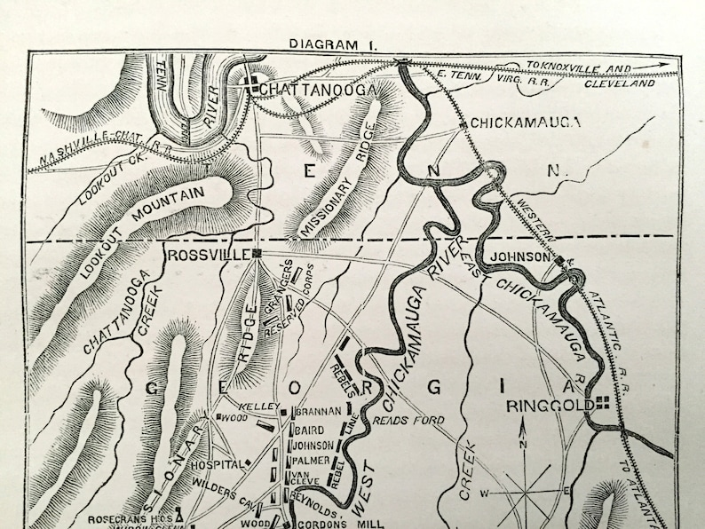

The Battle of Chickamauga, fought on September 19-20, 1863, was a significant Confederate victory during the American Civil War. The battle was fought near the Chickamauga Creek in northwest Georgia and was the first major Confederate victory in the Western Theater.
The battle was a result of Confederate General Braxton Bragg's attempt to capture Chattanooga (TN), a key Union supply center. Union General William Rosecrans led the Army of the Cumberland in an effort to prevent Bragg's Confederate army from capturing the city. The two sides clashed near Chickamauga Creek, where fierce fighting took place for two days.
On the first day of the battle, the Confederate army was able to gain the upper hand and push the Union army back. However, on the second day, a mix-up in communication on the Union side led to a gap in their lines, which the Confederate army exploited to gain a decisive victory. The Union army was forced to retreat, and the Confederate army was able to capture Chattanooga soon after.
The Battle of Chickamauga was a significant victory for the Confederacy, as it gave them control of the important city of Chattanooga and disrupted Union supply lines. However, the victory was short-lived, as the Union army was able to regroup and launch a successful counterattack soon after, leading to the Battle of Missionary Ridge and the eventual Confederate retreat from Chattanooga.
In terms of casualties, the Battle of Chickamauga was one of the bloodiest battles of the Civil War, with over 34,000 total casualties. The battle had far-reaching consequences, as it solidified the Confederacy's hold on the Western Theater and made it clear that the war would not be won easily for either side.